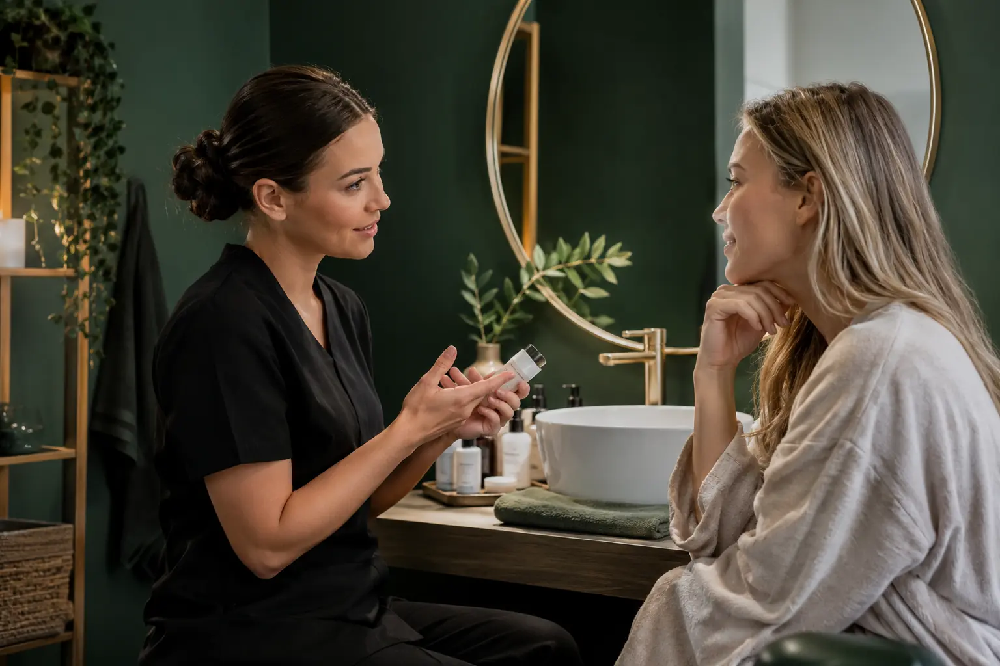

Pirmoji veido priežiūros konsultacija: poreikiai, istorija ir aiškus planas
Autorius: Madbeauty redakcija · Numatyta 2026 m. gruodžio 6 d. 10:00 (Lietuvos laiku)
Kaip pasiruošti veido priežiūros konsultacijai, užrašyti pastebėjimus ir suprasti, ką apima siūlomas procedūros planas.

Pirmoji veido priežiūros konsultacija padeda susieti jūsų tikslą, ankstesnes procedūras, naudojamas priemones ir pastebėtas reakcijas su aiškiai apibrėžtu tolesniu planu. Ji savaime nenustato odos sutrikimo: naudingiausia atsinešti konkrečius pastebėjimus ir suprasti, kokia paslauga siūloma, kas į ją įeina ir kokios jos ribos.
Ką užsirašyti prieš vizitą
Užrašykite tai, ką pastebėjote, o ne diagnozę. Pavyzdžiui, vietoj „mano oda yra X tipo“ pasižymėkite, kada pastebite tempimą, paraudimą ar kitą jums svarbų pojūtį ir kas tuo metu vyko. Nebūtina žinoti tikslių datų ar prisiminti kiekvienos priemonės sudėties.
- Tikslas: ką norite aptarti arba kokį kosmetinį pokytį svarstote? Jei tikslų keli, pažymėkite svarbiausią.
- Pastebėjimai: ką matote ar jaučiate, kurioje vietoje ir kada tai dažniausiai pasitaiko? Aprašykite, nevertinkite kaip sutrikimo.
- Ankstesnės procedūros: ką prisimenate apie pavadinimą, datą ar priemonę ir kaip po vizito jautėtės.
- Dabartinės priemonės: produktų pavadinimai arba pakuočių nuotraukos ir, jei žinote, kaip dažnai jas naudojate.
- Ankstesnės reakcijos: kokią priemonę ar procedūrą naudojote, kada pastebėjote reakciją ir kas pasikeitė vėliau. Jei informacija neaiški, taip ir pažymėkite.
Ši stebėjimų kortelė skirta pokalbiui, ne savidiagnostikai ar odos būklės įvertinimui. Dalinkitės tik ta informacija, kuri svarbi jūsų vizitui ir kuria norite pasidalyti.
Konsultacija ir procedūros parinkimas nėra tas pats
„Odos priežiūros konsultacija“ gali reikšti pokalbį apie jūsų pastebėjimus ir naudojamas priemones. „Veido procedūros parinkimo konsultacija“ gali būti skirta apsvarstyti galimus paslaugos variantus. Tai aprašomieji pavadinimai: vien iš jų negalima spręsti, ar tą pačią dieną bus atliekama procedūra, kokie veiksmai įeina į kainą ar koks metodas bus naudojamas. Prieš sutikdami išsiaiškinkite, ar mokate už pokalbį, procedūrą, ar abu.
Tai matyti ir konkrečiuose meniu. 2026 m. spalio 9 d. peržiūrėtuose dviejuose Treatwell pasiūlymuose buvo atskirai įvardyti mechaninis, ultragarsinis ir kombinuotas veido valymas, o kitame meniu nurodytos ir kitos paslaugos, pavyzdžiui, Hydrafacial bei LED. Tai tik tų dviejų meniu pavyzdžiai, ne vienodas visų teikėjų standartas ar Madbeauty pasiūla. Peržiūrėtas pirmasis meniu ir antrasis meniu parodo, kodėl verta lyginti konkrečius veiksmus, trukmę ir kainą, o ne vien paslaugos pavadinimą. Pilingo atveju paprašykite paaiškinti, kokia konkreti paslauga siūloma ir kokių nurodymų reikės laikytis; AAD apžvalga apie cheminius pilingus aprašo skirtingas pilingo apimtis ir atsigavimo eigą, tačiau nenusako konkretaus Lietuvos teikėjo protokolo.
Kaip atpažinti aiškų pasiūlymą
Po konsultacijos turėtumėte suprasti siūlomos paslaugos tikslą, jos veiksmų seką ir ribas. Praktinis palyginimo būdas – užrašyti atsakymus į šiuos punktus:
- Koks mano įvardytas tikslas ir kaip siūlomas metodas su juo susijęs?
- Kokie konkretūs veiksmai, produktai ar įrenginiai numatyti? Ar procedūra įeina į konsultacijos kainą?
- Kokia visa kaina ir numatoma vizito trukmė? Ar yra papildomų pasirenkamų dalių?
- Kokie galimi apribojimai, alternatyvos ir priežiūros nurodymai po procedūros?
- Kas atliks paslaugą ir ar jos pobūdis yra kosmetinis, ar sveikatos priežiūros?
Jei atsakymas lieka miglotas, paprašykite paaiškinti konkrečią veiksmų seką ir kas neįeina į pasiūlymą. „Procedūra parinkta pagal odos poreikius“ nėra pakankamai aišku, jei nežinote, kokia paslauga atliekama, kas į ją įeina ir kokie jos apribojimai.
Kur baigiasi kosmetinė konsultacija
Kosmetinė konsultacija nepakeičia sveikatos priežiūros specialisto vertinimo. NVSC pabrėžia, kad grožio paslaugos ir asmens sveikatos priežiūros paslaugos skiriasi; paslaugos priskyrimas priklauso nuo jos pobūdžio, o grožio veiklos higienos pasas savaime nesuteikia teisės atlikti bet kokią intervenciją. Jei siūlomas veiksmas neaiškus arba pateikiamas kaip gydymas, prieš sutikdami išsiaiškinkite, kas jį atlieka ir kokiu pagrindu. Daugiau apie šią ribą rašo Nacionalinis visuomenės sveikatos centras.
Prieš vizitą pateikėjo patikrą laikykite atskiru žingsniu: NVSC pataria grožio paslaugų atveju tikrinti leidimą-higienos pasą. Tai neįrodo, kad Madbeauty patikrino konkretų teikėją ar nustatė jūsų individualų tinkamumą paslaugai. NVSC rekomendacija vartotojams pateikia bendrus pasirinkimo ir higienos principus.
Trumpa užrašų kortelė
- Mano tikslas: ____________________
- Pastebėjau ir kada: ____________________
- Ankstesnės procedūros ar priemonės, kurias prisimenu: ____________________
- Ką šiandien naudoju ir ką noriu aptarti: ____________________
- Siūlomos paslaugos pavadinimas ir veiksmai: ____________________
- Kas įskaičiuota, visa kaina ir trukmė: ____________________
- Apribojimai, priežiūros nurodymai ir kitas žingsnis: ____________________
Kortelė padeda užfiksuoti savo klausimą ir suprasti gautą atsakymą. Ji nenustato odos tipo, ligos ar procedūros tinkamumo.
Procedūrų aprašai kataloge: Odos priežiūros konsultacija, Veido procedūros parinkimo konsultacija, Veido priežiūra. Miestą ir realaus teikėjo pasiūlymą pasirinkite kataloge, kai tokia pasiūla pateikta.
Susiję gidai
Šaltiniai
- VIP veido procedūros · variantų meniu · www.treatwell.lt
- Kosmetologija Visiems · veido procedūrų meniu · www.treatwell.lt
- NVSC · grožio ir sveikatos paslaugų riba · nvsc.lrv.lt
- NVSC · teikėjo pasirinkimas ir instrukcijos · nvsc.lrv.lt
- AAD · cheminio pilingo apimtis · www.aad.org